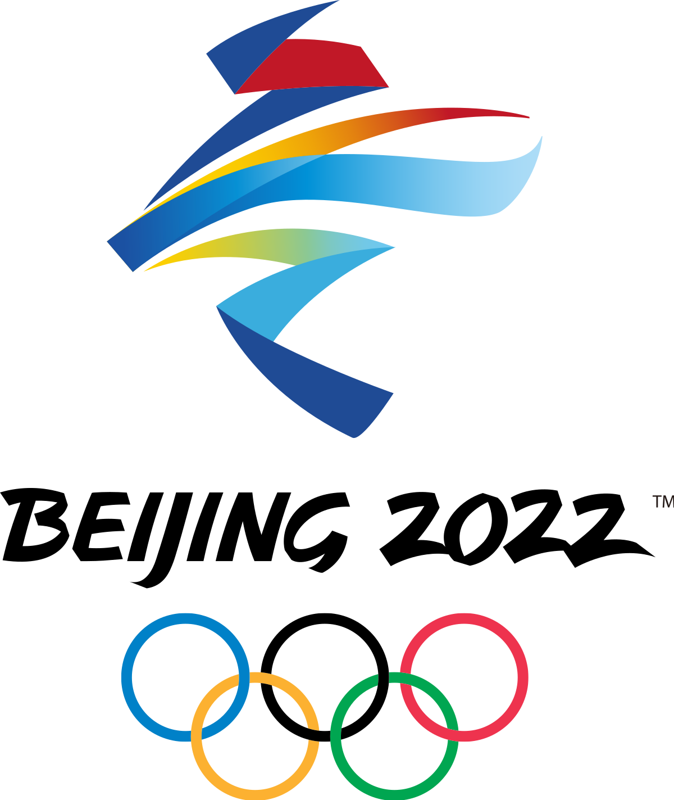

Vinter OL
Vinter-OL blir arrangert hvert fjerde år, og består av 15 forskjellige idretter og 109 forskjellige øvelser. Norge, som et land der befolkningen sies å være født med ski på beina, sender flere utøvere til denne begivenheten. Dette fører selvsagt til stort engasjement blant de fleste nordmenn.
Topp 5 land med flest antall medaljer i Vinter-OL 2022
| Nr. | Land | Bronse 🏅 | Sølv 🏅 | Gull 🏅 | Antall |
|---|---|---|---|---|---|
| 1. | Norge | 13 | 8 | 16 | 37 |
| 2. | Tyskland | 5 | 10 | 12 | 27 |
| 3. | Kina | 2 | 4 | 9 | 15 |
| 4. | USA | 7 | 10 | 8 | 25 |
| 5. | Sverige | 5 | 5 | 8 | 18 |